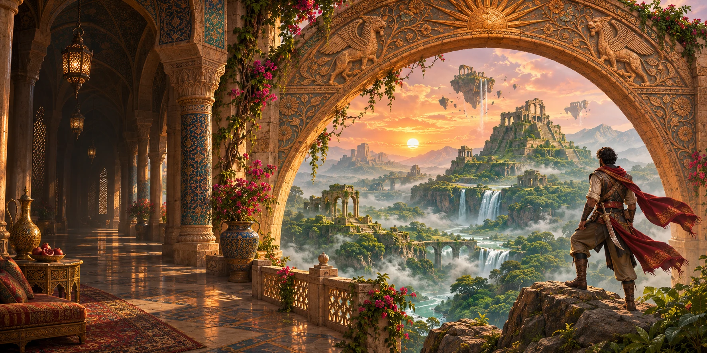

The Lost
World
← → för att gå · Mellanslag för att hoppa · Esc för menyn · ↓ Starta djungeljakten
Ta den brutna bron och häv dig upp till terrassen.
Banan laddas.
A/D eller ←/→ för rörelse · Mellanslag eller hoppknappen · Tryck två gånger snabbt för dubbel hopphöjd · Fall: 0
← → för att gå · Mellanslag för att hoppa · Esc för menyn · ↓ Starta djungeljakten